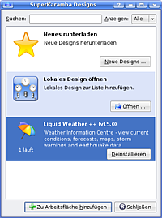
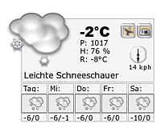

SuperKaramba
Archivierte Anleitung
Dieser Artikel wurde archiviert, da er - oder Teile daraus - nur noch unter einer älteren Ubuntu-Version nutzbar ist. Diese Anleitung wird vom Wiki-Team weder auf Richtigkeit überprüft noch anderweitig gepflegt. Zusätzlich wurde der Artikel für weitere Änderungen gesperrt.
Achtung!
Kubuntu 8.04 (mit KDE 3.5.10) ist keine LTS-Version und wird damit ab Oktober 2009 nicht mehr unterstützt. Plasma in KDE4 unterstützt auch ältere SuperKaramba-Themen ("Designs").
Zum Verständnis dieses Artikels sind folgende Seiten hilfreich:
SuperKaramba  ist ein Programm für KDE3, welches den Einsatz von Desklets - die Darstellung verschiedener Miniprogramme auf dem Desktop - ermöglicht. Die Weiterentwicklung von SuperKaramba wurde eingestellt, daher sollten ab KDE4 bevorzugt Plasma bzw. Plasmoide eingesetzt werden.
ist ein Programm für KDE3, welches den Einsatz von Desklets - die Darstellung verschiedener Miniprogramme auf dem Desktop - ermöglicht. Die Weiterentwicklung von SuperKaramba wurde eingestellt, daher sollten ab KDE4 bevorzugt Plasma bzw. Plasmoide eingesetzt werden.
Es kann auch unter GNOME verwendet werden, wobei allerdings einige Qt-Bibliotheken bzw. Abhängigkeiten automatisch mit installiert werden.
Installation¶
Folgendes Paket muss installiert [1] werden:
superkaramba (universe, [2])
Nach der Installation lässt sich das Programm im K-Menü über "Dienstprogramme -> SuperKaramba - Arbeitsflächen-Erweiterungen" aufrufen oder mit dem Befehl superkaramba starten [3].
Benutzung¶
 Nach dem Programmstart stehen zwei Möglichkeiten zur Auswahl:
neues (Design he)runterladen
Lokales Design öffnen
Durch einen  auf die Schaltfläche "Neue Designs" öffnet sich ein Auswahldialog mit KDE-look.org. Hier werden in den drei Kategorien "Bestbewertete", "Häufigste Downloads" und "Neueste" verschiedene Desklets inkl. Vorschaubild und Beschreibung angezeigt. Damit es später keine Probleme gibt, sollte man auch die Schaltfläche "Details" anwählen, um zu erfahren, welche Voraussetzungen das jeweilige Desklet benötigt. Mit der Schaltfläche "Installieren" wird das ausgewählte Desklet heruntergeladen und in SuperKaramba eingebunden.
auf die Schaltfläche "Neue Designs" öffnet sich ein Auswahldialog mit KDE-look.org. Hier werden in den drei Kategorien "Bestbewertete", "Häufigste Downloads" und "Neueste" verschiedene Desklets inkl. Vorschaubild und Beschreibung angezeigt. Damit es später keine Probleme gibt, sollte man auch die Schaltfläche "Details" anwählen, um zu erfahren, welche Voraussetzungen das jeweilige Desklet benötigt. Mit der Schaltfläche "Installieren" wird das ausgewählte Desklet heruntergeladen und in SuperKaramba eingebunden.
Auch ein lokales Design bzw. Desklet lässt sich leicht installieren. Mit "lokal" ist eine Datei auf der eigenen Festplatte gemeint, die die Endung .skz trägt. Man lädt mit einem Browser z.B. das Design Liquid Weather ++ herunter. Nun steht über die Schaltfläche "Öffnen" ein Dateiauswahldialog zur Verfügung, in dem man die heruntergeladene Datei liquidweather++-15.0.skz auswählt. Das neue Design erscheint jetzt zusätzlich in der Übersicht des Programms und wird gleichzeitig gestartet.
Die weitere Konfiguration hängt vom jeweiligen Desklet ab und ist unterschiedlich. Im Falle von Liquid Weather ++ klickt man das Desklet mit  an und kommt darüber zu "Design einrichten -> Thema einrichten". Dort können dann vielfältige Einstellungen vorgenommen werden, z.B. die Sprache, den Ort für die aktuelle Wetteranzeige und das Aussehen des Desklets.
an und kommt darüber zu "Design einrichten -> Thema einrichten". Dort können dann vielfältige Einstellungen vorgenommen werden, z.B. die Sprache, den Ort für die aktuelle Wetteranzeige und das Aussehen des Desklets.

Beim Schließen von SuperKaramba wird das Programm nicht wirklich beendet, sondern nur in die Symbolleiste (Panel) verkleinert. Von dort kann es mit einem auf das Symbol auch wieder geladen werden ("Wiederherstellen").
Links¶
SuperKaramba - Wikipedia
Handbuch zu SuperKaramba
 auf docs.kde.org
auf docs.kde.org SuperKaramba Themes
auf KDE-Look.org
- Erstellt mit Inyoka
-
 2004 – 2017 ubuntuusers.de • Einige Rechte vorbehalten
2004 – 2017 ubuntuusers.de • Einige Rechte vorbehalten
Lizenz • Kontakt • Datenschutz • Impressum • Serverstatus -
Serverhousing gespendet von